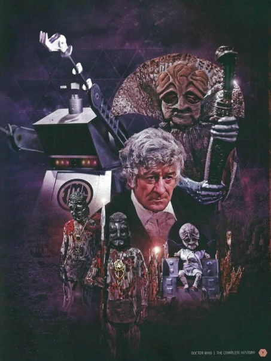

Эра Третьего Доктора (8 сезон)
<<< НАЗАД ||| 4. Колония в космосе ||| ДАЛЬШЕ >>>
Субтитры: Русские и Английские |  |
|---|---|
+ Ранний монтаж (эпизод 2) +4 сек. Субтитры: Русские и Английские | |
RSC реконструкция цвета, 2011 Субтитры: Русские и Английские | |
с обновлением визуальных эффектов (cunningmunki) Субтитры: отсутствуют | |
Дата выхода: 10 апреля - 15 мая 1971
Формат: 6 эпизодов по 25 мин.
| Все эпизоды найдены в 1983 г. в 525-строчном формате NTSC * Цвет преобразован (PAL) |
|---|
 |
Повелители Времени временно снимают изгнание с Доктора и отправляют его и Джо на далёкую планету Уксариус, где группа земных колонистов пытается построить новую жизнь. Но на планету прибывает корабль Межпланетной горнодобывающей корпорации — и корпорация готова на всё, чтобы вытеснить поселенцев и забрать ресурсы. А тем временем Мастер выдаёт себя за межзвёздного арбитра, прибывшего рассудить спор, — но его настоящий интерес в руинах древнего города, где скрыто нечто куда более опасное, чем земельный конфликт.
Первая серия, где Доктор наконец покидает Землю после изгнания, — и первая поездка Джо в ТАРДИС.
VHS - ноябрь 2001 | DVD - 3 октября 2011 |  Blu-ray - 8 марта 2021 * Версия в нашей группе |
|---|



Трейлер: